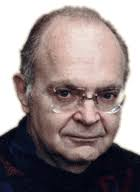

Donald Ervin Knuth (born January 10, 1938) is an American computer scientist,
mathematician, and professor emeritus at Stanford University.
He is the 1974 recipient of the ACM Turing Award,
informally considered the Nobel Prize of computer science.
Knuth has been called the "father of the analysis of algorithms.
Knuth is the author of the multi-volume work The Art of Computer Programming.
He contributed to the development of the rigorous analysis of the computational complexity of algorithms
and systematized formal mathematical techniques for it. In the process, he also popularized the asymptotic notation.
In addition to fundamental contributions in several branches of theoretical computer science,
Knuth is the creator of the TeX computer typesetting system,
the related METAFONT font definition language and rendering system,
and the Computer Modern family of typefaces.
As a writer and scholar,
Knuth created the WEB and CWEB computer programming systems designed to encourage
and facilitate literate programming,
and designed the MIX/MMIX instruction set architectures.
He strongly opposes the granting of software patents,
and has expressed his opinion to the United States Patent
and Trademark Office and European Patent Organisation.
Biography
Donald Knuth was born in Milwaukee, Wisconsin,
to Ervin Henry Knuth and Louise Marie Bohning.
He describes his heritage as "Midwestern Lutheran German".
His father owned a small printing business and taught bookkeeping.
While a student at Milwaukee Lutheran High School,
Knuth thought of ingenious ways to solve problems.
For example, in eighth grade,
he entered a contest to find the number of words
that the letters in "Ziegler's Giant Bar" could be rearranged to create;
the judges had identified 2,500 such words.
With time gained away from school due to a fake stomachache,
and working the problem the other way,
Knuth used an unabridged dictionary and
determined whether each dictionary entry could be formed using the letters in the phrase.
Using this algorithm, he identified over 4,500 words, winning the contest.
As prizes, the school received a new television and enough candy bars
for all of his schoolmates to eat.
Education
- 1956: He graduated from Milwaukee Lutheran High School, where he excelled in mathematics and won a contest to find the number of words that the letters in “Ziegler’s Giant Bar” could be rearranged to create.
- September 1956–June 1960: He received his BS and MS in mathematics from the Case Institute of Technology (now Case Western Reserve University), where he had access to an IBM 650 computer and developed his interest in programming.
- 1963: He earned his PhD in mathematics from the California Institute of Technology (Caltech), where he wrote his dissertation on finite semi-fields and projective planes under the supervision of Marshall Hall, Jr.
- 1963-1968: He was a research fellow at Caltech, where he began working on his magnum opus, The Art of Computer Programming.
- 1968-present: He joined Stanford University as a professor of computer science, where he continued his research on various topics such as analysis of algorithms, typesetting systems, literate programming, and instruction set architectures1. He is currently a professor emeritus at Stanford.
Employment History
- 1960–1968: Consultant, Burroughs Corp., Pasadena, California.
- 1963–1966: Assistant Professor of Mathematics, California Institute of Technology.
- 1966–1968: Associate Professor of Mathematics, California Institute of Technology.
- 1968–: Professor of Computer Science, Stanford University.
- 1968–1969: Staff Mathematician, Institute for Defense Analyses—Communications Research Division.
- 1972–1973: Guest Professor of Mathematics, University of Oslo.
- 1977–: Professor of Electrical Engineering (by courtesy), Stanford University.
- 1977–1989: Fletcher Jones Professor of Computer Science, Stanford University.
- 1990–1992: Professor of The Art of Computer Programming, Stanford University.
- 1993–: Professor of The Art of Computer Programming, Emeritus, Stanford University.
- 2002–2006, 2011–2017: Visiting Professor in Computer Science, University of Oxford.
- 2011–2016: Honorary Distinguished Professor, Cardiff School of Computer Science and Informatics.
- 2016–: Theta Chi Hall of Honor.
Awards and Distinctions
- 1974: The ACM Turing Award, Association for Computing Machinery, generally regarded as the Nobel Prize equivalent for Computer Science.
- 1995: The IEEE John von Neumann Medal, awarded by the IEEE Board of Directors for outstanding achievements in computer-related science and technology.
- 1996: The Japan Kyoto Prize for Information Science, awarded by the Inamori Foundation for significant contributions to the scientific, cultural, and spiritual betterment of humankind in the field of information science.
- 1979: The National Medal of Science, awarded by the President of the United States to individuals in science and engineering who have made important contributions to the advancement of knowledge.
Contributions to the Field
- He is the author of the multivolume work The Art of Computer Programming, which is considered one of the most comprehensive and authoritative sources on the analysis of algorithms and the design of computer programs.
- He created the TeX computer typesetting system, the related METAFONT font definition language and rendering system, and the Computer Modern family of typefaces, which are widely used for publishing scientific and mathematical papers.
- He developed the WEB and CWEB computer programming systems, which are designed to encourage and facilitate literate programming, a methodology that combines natural language and code to produce elegant and readable programs.
- He invented the MIX and MMIX instruction set architectures, which are hypothetical computer models used for teaching and illustrating various concepts in computer science.
- He introduced several mathematical notations and concepts, such as Knuth's uparrow notation for very large numbers, Knuth–Morris–Pratt algorithm for string matching, Knuth–Bendix completion algorithm for automated theorem proving, Robinson–Schensted–Knuth correspondence for combinatorics, and LR parser for syntax analysis.
- He received many prestigious awards and honors, such as the ACM Turing Award, the National Medal of Science, the Kyoto Prize, the Faraday Medal, and the BBVA Foundation Frontiers of Knowledge Award¹. He is also a member of the National Academy of Sciences and a foreign member of the Royal Society.
Relevant References